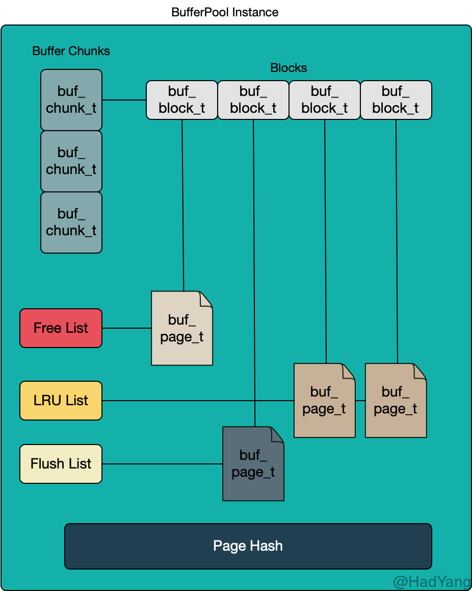
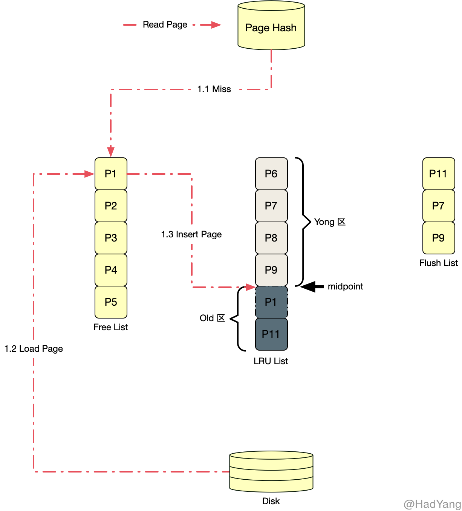
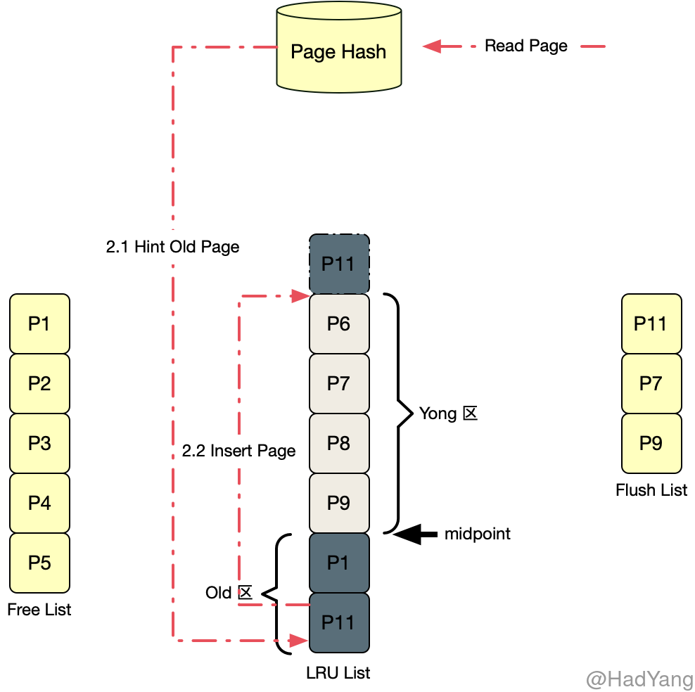
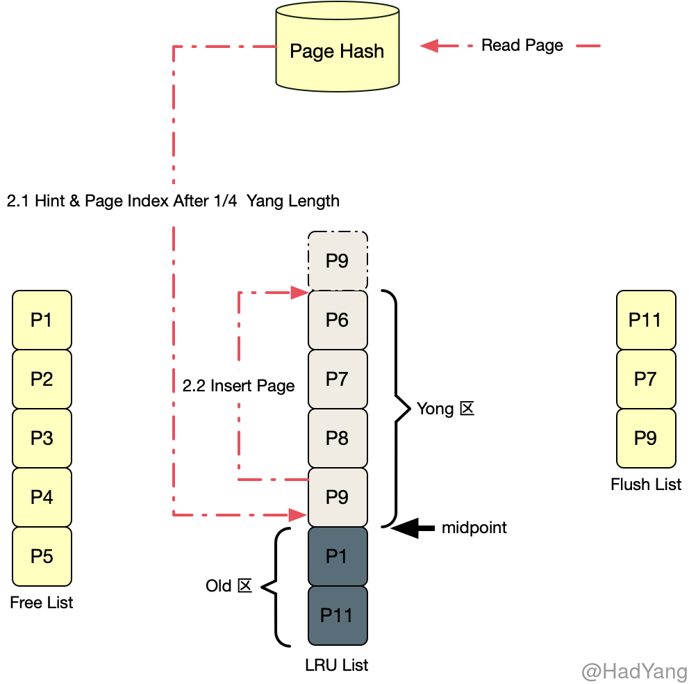

<!DOCTYPE html>
<html lang="zh-cn">
<head>
  <meta charset="utf-8">
  <meta http-equiv="X-UA-Compatible" content="IE=edge,chrome=1">
  <title>【Innodb】内存使用 - HadYang</title>
  <meta name="renderer" content="webkit" />
<meta name="viewport" content="width=device-width, initial-scale=1, maximum-scale=1"/>

<meta http-equiv="Cache-Control" content="no-transform" />
<meta http-equiv="Cache-Control" content="no-siteapp" />

<meta name="theme-color" content="#f8f5ec" />
<meta name="msapplication-navbutton-color" content="#f8f5ec">
<meta name="apple-mobile-web-app-capable" content="yes">
<meta name="apple-mobile-web-app-status-bar-style" content="#f8f5ec">


<meta name="author" content="HadYang" /><meta name="description" content="Buffer Pool Innodb 启动时会划分一片连续的内存空间，并将这些内存空间分配给多个 Buffer Pool Instance，每个 Buffer Pool Instance 都会维护一组 Buffer Pool 模块，拥有独立的锁、Mute" /><meta name="keywords" content="Java" />


<meta name="generator" content="Hugo 0.73.0 with theme even" />


<link rel="canonical" href="https://hadyang.github.io/2020/12/innodb-memory/" />
<link rel="apple-touch-icon" sizes="180x180" href="/apple-touch-icon.png">
<link rel="icon" type="image/png" sizes="32x32" href="/favicon-32x32.png">
<link rel="icon" type="image/png" sizes="16x16" href="/favicon-16x16.png">
<link rel="manifest" href="/manifest.json">
<link rel="mask-icon" href="/safari-pinned-tab.svg" color="#5bbad5">


<link href="/sass/main.min.75c01efdcbc2767fdfe1f22f5a6fccc8c390d3cda325742f698bd0c6344144be.css" rel="stylesheet">
<link rel="stylesheet" href="https://cdn.jsdelivr.net/npm/@fancyapps/fancybox@3.1.20/dist/jquery.fancybox.min.css" integrity="sha256-7TyXnr2YU040zfSP+rEcz29ggW4j56/ujTPwjMzyqFY=" crossorigin="anonymous">


<meta property="og:title" content="【Innodb】内存使用" />
<meta property="og:description" content="Buffer Pool Innodb 启动时会划分一片连续的内存空间，并将这些内存空间分配给多个 Buffer Pool Instance，每个 Buffer Pool Instance 都会维护一组 Buffer Pool 模块，拥有独立的锁、Mute" />
<meta property="og:type" content="article" />
<meta property="og:url" content="https://hadyang.github.io/2020/12/innodb-memory/" />
<meta property="article:published_time" content="2020-12-19T00:00:00+00:00" />
<meta property="article:modified_time" content="2020-12-19T00:00:00+00:00" />
<meta itemprop="name" content="【Innodb】内存使用">
<meta itemprop="description" content="Buffer Pool Innodb 启动时会划分一片连续的内存空间，并将这些内存空间分配给多个 Buffer Pool Instance，每个 Buffer Pool Instance 都会维护一组 Buffer Pool 模块，拥有独立的锁、Mute">
<meta itemprop="datePublished" content="2020-12-19T00:00:00&#43;00:00" />
<meta itemprop="dateModified" content="2020-12-19T00:00:00&#43;00:00" />
<meta itemprop="wordCount" content="2258">


<meta itemprop="keywords" content="" /><meta name="twitter:card" content="summary"/>
<meta name="twitter:title" content="【Innodb】内存使用"/>
<meta name="twitter:description" content="Buffer Pool Innodb 启动时会划分一片连续的内存空间，并将这些内存空间分配给多个 Buffer Pool Instance，每个 Buffer Pool Instance 都会维护一组 Buffer Pool 模块，拥有独立的锁、Mute"/>

<!--[if lte IE 9]>
  <script src="https://cdnjs.cloudflare.com/ajax/libs/classlist/1.1.20170427/classList.min.js"></script>
<![endif]-->

<!--[if lt IE 9]>
  <script src="https://cdn.jsdelivr.net/npm/html5shiv@3.7.3/dist/html5shiv.min.js"></script>
  <script src="https://cdn.jsdelivr.net/npm/respond.js@1.4.2/dest/respond.min.js"></script>
<![endif]-->

</head>
<body>
  <div id="mobile-navbar" class="mobile-navbar">
  <div class="mobile-header-logo">
    <a href="/" class="logo">HadYang</a>
  </div>
  <div class="mobile-navbar-icon">
    <span></span>
    <span></span>
    <span></span>
  </div>
</div>
<nav id="mobile-menu" class="mobile-menu slideout-menu">
  <ul class="mobile-menu-list">
    <a href="https://hadyang.github.io/interview/">
        <li class="mobile-menu-item">Interview</li>
      </a><a href="/categories/">
        <li class="mobile-menu-item">分类</li>
      </a>
  </ul>

  


</nav>

  <div class="container" id="mobile-panel">
    <header id="header" class="header">
        <div class="logo-wrapper">
  <a href="/" class="logo">HadYang</a>
</div>


<nav class="site-navbar">
  <ul id="menu" class="menu">
    <li class="menu-item">
        <a class="menu-item-link" href="https://hadyang.github.io/interview/">Interview</a>
      </li><li class="menu-item">
        <a class="menu-item-link" href="/categories/">分类</a>
      </li>
  </ul>
</nav>

    </header>

    <main id="main" class="main">
      <div class="content-wrapper">
        <div id="content" class="content">
          <article class="post">
    
    <header class="post-header">
      <h1 class="post-title">【Innodb】内存使用</h1>

      <div class="post-meta">
        <span class="post-time"> 2020-12-19 </span>
        <div class="post-category">
            <a href="/categories/database/"> Database </a>
            </div>
          <span class="more-meta"> 约 2258 字 </span>
          <span class="more-meta"> 预计阅读 5 分钟 </span>
        
      </div>
    </header>

    <div class="post-toc" id="post-toc">
  <h2 class="post-toc-title">文章目录</h2>
  <div class="post-toc-content always-active">
    <nav id="TableOfContents">
  <ul>
    <li><a href="#buffer-pool">Buffer Pool</a>
      <ul>
        <li><a href="#buffer-chunk">Buffer Chunk</a></li>
        <li><a href="#页链表">页链表</a></li>
        <li><a href="#page-hash">Page Hash</a></li>
      </ul>
    </li>
    <li><a href="#doublewrite">DoubleWrite</a></li>
    <li><a href="#change-buffer">Change Buffer</a>
      <ul>
        <li><a href="#change-buffer-实现">Change Buffer 实现</a></li>
      </ul>
    </li>
  </ul>
</nav>
  </div>
</div>
    <div class="post-content">
      <h2 id="buffer-pool">Buffer Pool</h2>
<p>Innodb 启动时会划分一片连续的内存空间，并将这些内存空间分配给多个 Buffer Pool Instance，每个 Buffer Pool Instance 都会维护一组 Buffer Pool 模块，拥有独立的锁、Mutex、Buffer Chunk 以及各种链表 Instance 可以并发的访问。Innodb 中的 Page 会被分配到不同的 Buffer Pool Instance 中，各个 Instance 中的 Page 不重合。</p>
<p>Buffer Pool 中包含物理页面的缓存，包括索引页、数据页、Undo页，还包含 Change Buffer、AHI 以及Innodb的锁信息。当 Innodb 访问物理页面时，会先从对应 Buffer Pool Instance 中的 Buffer Pool 查找该页面的缓存，若未找到则从磁盘读取该页面，并加载到 Buffer Pool 中。</p>
<p></p>
<h3 id="buffer-chunk">Buffer Chunk</h3>
<p>Buffer Chunk 是 Buffer Pool 中实际存储数据的物理结构，每个 Buffer Pool 包含一个或多个 Buffer Chunk。每个 Buffer Chunk 都包含一个 Block 数组，Block 数组中的每个元素是一个数据页控制体，其中包含了一个指向具体数据页的指针，以及对应的数据页控制体。</p>
<h3 id="页链表">页链表</h3>
<p>页链表中的元素，均为数据页控制体 <code>buf_page_t</code></p>
<h4 id="free-list">Free List</h4>
<p>管理未使用的空闲数据页，在 Buffer Pool 初始化时，会将 Buffer Chunk 中所有 Page 均加入 Free List。当 Buffer Pool 需要使用 Page 时，先从 Free List 中获取空闲页。若获取失败，则会进行页淘汰策略，将 LRU List 中最近最少使用的页（Old 区末尾的页）淘汰掉，若淘汰的页为脏页，则会触发 Flush 操作。</p>
<h4 id="lru-list">LRU List</h4>
<p>管理已使用的页，当 Innodb 刚启动时 LRU List 是空的，随着开始处理 SQL 请求 Innodb 会从 Free List 中获取空闲的页，加入 LRU List。相比于朴素的 LRU 列表，Innodb 中的 LRU List 中加入一个 <strong>midpoint</strong> 位置，将 LRU List 分割为 Yong 和 Old 两个区。Yang 区保存较热数据，Old 区保存刚从数据文件中读取出来的数据。</p>
<p>对于 Innodb 对页的请求，首先会从 Page Hash 中进行判断，根据不同结果有以下三种处理方式：</p>
<ol>
<li>Page Hash 中未找到该页（说明该页不存在于 LRU List），则从磁盘中读取该页加入到 Old 区头部</li>
</ol>
<p></p>
<ol start="2">
<li>Page Hash 中找到该页，并且该页位于 Old 区，读取完该页后将其加入 Yang 区头部</li>
</ol>
<p></p>
<ol start="3">
<li>Page Hash 中找到该页，并且该页位于 Yang 区，读取完该页后，若该页位于 Yang 区的 1/4 位置之后，则将其插入 Yang 区头部</li>
</ol>
<p></p>
<p>相比于朴素的 LRU 算法，Innodb 采用了相对精细化的 LRU 算法。避免一些 <strong>一次性读取</strong> 将热点数据挤出缓存，比如对于一些全表扫描来说，若直接将页加入 LRU 头部，则会导致热点数据被淘汰，整体效率下降。</p>
<h4 id="flush-list">Flush List</h4>
<p>管理已修改但尚未 Flush 的页，Flush List 上的页在 LRU List 一定同时存在，反之则不成立。在 Flush List 上的 Page 按其最早修改时的 LSN 降序排列，最小的 LSN 位于链表的尾部，每次 Flush 都是从尾部开始。</p>
<h3 id="page-hash">Page Hash</h3>
<p>LRU List 中 Page 的字典，每个 Buffer Pool 都包含一个独立的 Page Hash，其作用主要是为了避免对 LRU List 的全链表扫描，通过使用 <code>Space_id</code> 和 <code>Page_no</code> 就能快速找到已经被读入 Buffer Pool 的 Page 。</p>
<p>缓存更新策略</p>
<ul>
<li><strong>Cache Aside</strong> 懒加载模式，客户端请求缓存数据，若缓存中不存在该数据，则客户端再从底层数据源获取数据，并更新到缓存中</li>
<li><strong>Read Through</strong> 缓存代理模式，客户端请求缓存数据，若缓存不存在该数据，则缓存层从底层数据源获取数据，加载到缓存，并返回给客户端。</li>
</ul>
<p>Read Through 与 Cache Aside 类似，但代理了底层数据源，客户端不需要关心缓存未命中的情况。Innodb 使用的是 Read Through 模式</p>
<p>缓存具有两种基本的写入方式：</p>
<ul>
<li><strong>直写式</strong>（Write Through）：将数据同步写入缓存和后端存储设备。</li>
<li><strong>回写式</strong>（Write Back）（也叫做后写式）：首先，将数据写入缓存。然后，缓存会延缓将这些数据写入至后端存储设备，直到缓存块包含的数据即将被新的数据修改/替换。</li>
</ul>
<h2 id="doublewrite">DoubleWrite</h2>
<p>DoubleWrite 是 Innodb 数据安全的保证，由于 Innodb 的页大小（默认）为 <code>16KB</code>，而一般的磁盘簇大小为 <code>4KB</code>。因此可能存在只写入前 <code>4KB</code> 数据，然后宕机的情况，这种就称为 <strong>部分写失效</strong>（Partial page write）。部分写失效就可能导致数据丢失，为防止这种情况，Innodb 采用 DoubleWrite 机制。</p>
<ol>
<li>DoubleWrite 机制使用内存中的 DoubleWrite Buffer 存储从 Innodb Flush List 中准备写入的页</li>
<li>将 DoubleWrite Buffer 中的数据页写入磁盘的系统表空间中，并调用 fsync （连续写）</li>
<li>完成 DoubleWrite 写入后，再将 DoubleWrite Buffer 中的页逐个写入对应的文件中 （离散写）</li>
</ol>
<h2 id="change-buffer">Change Buffer</h2>
<p>与聚集索引不一样，二级索引通常是非唯一的，并且 <strong>二级索引的插入顺序相对比较随机</strong>。相似地，删除和更新操作影响的二级索引页在索引树上也不是相邻的。为解决这个问题，Innodb 引入了 Change Buffer 机制。Change Buffer 是一个特殊的数据结构，当非唯一二级索引页不在 Buffer Pool 时，保存其修改的索引页。缓存的修改页，可能是 INSERT、UPDATE 或者 DELETE 操作产生的，当这些修改页由于用户读取操作加载到 Buffer Pool 时合并。这样就可以有效避免将二级索引页从磁盘读入 Buffer Pool 带来的频繁随机 IO。</p>
<p>在内存中，Change Buffer 会占用一部分 Buffer Pool 。在磁盘上，Change Buffer 是系统表空间的一部分，当服务关闭时将索引改变缓存在其中。另外，Change Buffer 不支持包含倒排索引的二级索引，或者主键包含倒排索引。</p>
<p>修改页存储在 Change Buffer 中，在下面三种时机下会将修改合并到二级索引</p>
<ol>
<li>修改页被读入 Buffer Pool</li>
<li>Insert Buffer Bitmap 页追踪到该二级索引页上已无可用空间</li>
<li>Master Thread 定时合并</li>
</ol>
<p>当修改页由于用户或系统操作读取到 Buffer Pool 时，检查 Insert Buffer Bitmap 确认该二级索引页是否有修改。若有，则将对该页的修改都合并进去。</p>
<p><strong>Insert Buffer Bitmap</strong> 页用来追踪每个二级索引页的可用空间，若插入二级索引时发现本次插入会导致索引页可用空间小于 1/32 页，则会强制读取二级索引页，将 Change Buffer 中的修改合并进去。</p>
<p>Master Thread 会定时将 Change Buffer 中的修改合并到索引页中。</p>
<h3 id="change-buffer-实现">Change Buffer 实现</h3>
<p>Change Buffer 内部是一个 B+树，并且全局（所有表）只有一个，负责对所有表的二级索引进行 Change Buffer。而这个 B+ 树结构就存储在系统表空间中。 Change Buffer 中 B+ 树的所有节点都包含 <code>spaceid</code> 和 <code>offset</code> ，用于标记表空间和索引页的偏移地址。</p>
<p>因为在启用 Change Buffer 后，二级索引页的记录可能插入 Change Buffer ，为了保证每次合并 Change Buffer 都能成功，Innodb 使用一个特殊的页标记每个二级索引页的可用空间，这个页就是 Insert Buffer Bitmap。</p>
<p>Insert Buffer Bitmap 标记了每个页的可用空间，以及该页是否有记录被缓存在 Change Buffer 中。</p>

    </div>

    
<footer class="post-footer">
      
      <nav class="post-nav">
        <a class="prev" href="/2021/01/innodb-index-page-structure/">
            <i class="iconfont icon-left"></i>
            <span class="prev-text nav-default">【Innodb】索引页</span>
            <span class="prev-text nav-mobile">上一篇</span>
          </a>
        <a class="next" href="/2020/12/innodb-redolog/">
            <span class="next-text nav-default">【Innodb】Redo Log</span>
            <span class="next-text nav-mobile">下一篇</span>
            <i class="iconfont icon-right"></i>
          </a>
      </nav>
    </footer>
  </article>
        </div>
        <div id="gitalk-container"></div>
    <link rel="stylesheet" href="https://cdn.jsdelivr.net/npm/gitalk@1/dist/gitalk.css" crossorigin="anonymous">
    <script src="https://cdn.jsdelivr.net/npm/gitalk@1/dist/gitalk.min.js" crossorigin="anonymous"></script>
    <script type="text/javascript">
      var gitalk = new Gitalk({
        id: '\/2020\/12\/innodb-memory\/',
        title: '【Innodb】内存使用',
        clientID: '64b9f11ba0a3291ee49e',
        clientSecret: '8632b99db733cc33fd8f6fe85680f63f0db9d872',
        repo: 'hadyang.github.io',
        owner: 'hadyang',
        admin: ['hadyang'],
        body: decodeURI(location.href)
      });
      gitalk.render('gitalk-container');
    </script>
    <noscript>Please enable JavaScript to view the <a href="https://github.com/gitalk/gitalk">comments powered by gitalk.</a></noscript>

  

  

      </div>
    </main>

    <footer id="footer" class="footer">
      <div class="social-links">
  <a href="" type="application/rss+xml" class="iconfont icon-rss" title="rss"></a>
</div>

<div class="copyright">
  <span class="power-by">
    由 <a class="hexo-link" href="https://gohugo.io">Hugo</a> 强力驱动
  </span>
  <span class="division">|</span>
  <span class="theme-info">
    主题 -
    <a class="theme-link" href="https://github.com/olOwOlo/hugo-theme-even">Even</a>
  </span>

  

  <span class="copyright-year">
    &copy; 
    2017 - 
    2021<span class="heart"><i class="iconfont icon-heart"></i></span><span>HadYang</span>
  </span>
</div>

    </footer>

    <div class="back-to-top" id="back-to-top">
      <i class="iconfont icon-up"></i>
    </div>
  </div>
  
  <script src="https://cdn.jsdelivr.net/npm/jquery@3.2.1/dist/jquery.min.js" integrity="sha256-hwg4gsxgFZhOsEEamdOYGBf13FyQuiTwlAQgxVSNgt4=" crossorigin="anonymous"></script>
  <script src="https://cdn.jsdelivr.net/npm/slideout@1.0.1/dist/slideout.min.js" integrity="sha256-t+zJ/g8/KXIJMjSVQdnibt4dlaDxc9zXr/9oNPeWqdg=" crossorigin="anonymous"></script>
  <script src="https://cdn.jsdelivr.net/npm/@fancyapps/fancybox@3.1.20/dist/jquery.fancybox.min.js" integrity="sha256-XVLffZaxoWfGUEbdzuLi7pwaUJv1cecsQJQqGLe7axY=" crossorigin="anonymous"></script>


<script type="text/javascript" src="/js/main.min.c12618f9a600c40bd024996677e951e64d3487006775aeb22e200c990006c5c7.js"></script>
  <script type="text/javascript">
    window.MathJax = {
      tex: {
        inlineMath: [['$','$'], ['\\(','\\)']],
        }
    };
  </script>
  <script async src="https://cdn.jsdelivr.net/npm/mathjax@3.0.5/es5/tex-mml-chtml.js" integrity="sha256-HGLuEfFcsUJGhvB8cQ8nr0gai9EucOOaIxFw7qxmd+w=" crossorigin="anonymous"></script>


<script type="application/javascript">
var doNotTrack = false;
if (!doNotTrack) {
	window.ga=window.ga||function(){(ga.q=ga.q||[]).push(arguments)};ga.l=+new Date;
	ga('create', 'UA-157595781-2', 'auto');
	ga('set', 'anonymizeIp', true);
	ga('send', 'pageview');
}
</script>
<script async src='https://www.google-analytics.com/analytics.js'></script>


</body>
</html>
